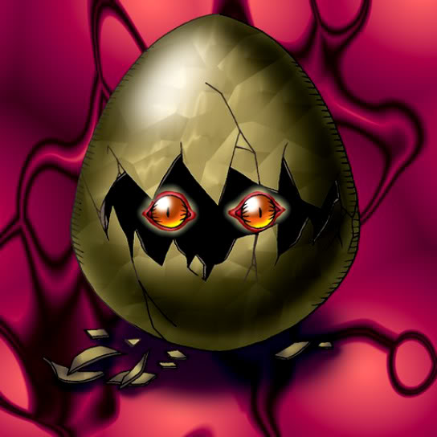

Monster Egg

Description: "Randomly transforms into a BEAST-WARRIOR/EARTH monster when powered up with Insect Imitation."
STATS
ATK: 600
DEF: 900DECK COST
Deck Cost per Card: 20EFFECT NOT IMPLEMENTED
Fusion List (5 Possible Fusions)
- Monster Egg + Firegrass = Bean Soldier
- Monster Egg + Hinotama Soul = Charubin the Fire Knight
- Monster Egg + Mechanical Snail = Cyber Soldier
- Monster Egg + Mechanical Spider = Cyber Soldier
- Monster Egg + Mystical Elf = Celtic Guardian